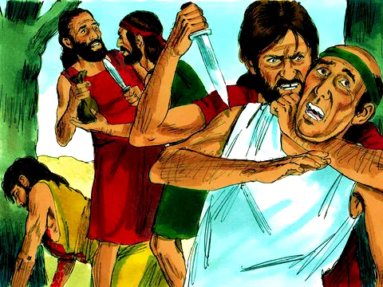
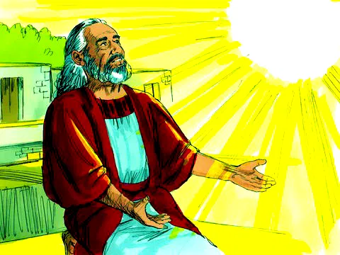
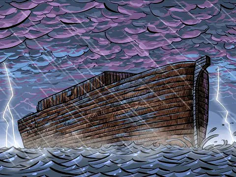

O Dilúvio e a Arca de Noé
Referência Bíblica: Gênesis 6, 7 e 8
O que você gosta de fazer num dia chuvoso? Essa é a história de uma grande chuva que caiu durante dias e dias, inundando a terra toda. Já imaginou? Mas Deus é amoroso e salvou uma família que confiava nele, e também muitos animais. Vamos ver como isso aconteceu? Noé amava a Deus e tentava obedecer sempre a tudo que Ele dizia. Mais ninguém amava a Deus assim, nem fazia as coisas como Deus mandava. As pessoas naquele tempo eram muito más, e gostavam de fazer tudo errado: violência, mentiras e todo tipo de maldades que se possa imaginar.
Deus se entristeceu tanto por causa dessa atitude das pessoas que decidiu enviar uma grande chuva, um dilúvio para inundar a terra e destruir toda a maldade das pessoas. Mas Deus queria salvar Noé e a sua família, porque ele era um homem bom e amava a Deus de coração.
Então certo dia, Deus explicou para Noé que deveria construir um barco muito grande, onde ele e sua família se protegeriam da grande chuva e inundação que iriam acontecer. Noé fez tudo exatamente como Deus mandou. Quando a arca ficou pronta e depois de tudo preparado, alimentos armazenados à bordo, tinha chegado o momento... Deus ordenou que Noé fizesse entrar na grande arca casais de animais de cada espécie para que também fossem salvos do dilúvio. Depois que todos entraram, Deus fechou a porta. De repente começou a chover. Primeiro umas pequenas gotinhas, depois uma forte chuva que durou 40 dias e 40 noites. A chuva não parava nenhum instante, mas dentro do barco estavam todos secos e à salvo. Com aquela quantidade de chuva, as águas começaram a subir e fez o barco navegar como se estivesse em alto mar.
Até que enfim, a chuva parou! Aos poucos a água começou a baixar até que a arca pousou sobre a montanha chamada Ararate. Depois de alguns dias, as águas foram secando. Quando o chão estava enxuto, Deus falou para Noé que tinha chegado a hora de deixarem a arca. Então saíram Noé, sua família e todos os animais dois a dois... Noé fez um altar e agradeceu muito a Deus por ter cuidado deles durante todo aquele tempo. Deus então prometeu que nunca mais enviaria tanta chuva sobre a terra, como no dilúvio. E para todos se lembrem da promessa que Ele fez, criou o arco-íris, que aparece nos dias de chuva no céu.
Moral da História
Deus nos salva e nos mantém em segurança. Pela bondade e misericórdia de Deus, muitas coisas ruins não acontecem a nós nem as nossas famílias. Deus protege aqueles que O amam e lhe obedecem. Deus também cuida dos animais. Ele fez uma promessa de que nunca mais destruiria a terra com dilúvio novamente e nos deixou um memorial, o arco-íris que pode ser sempre contemplado por nós nos dias de chuva.